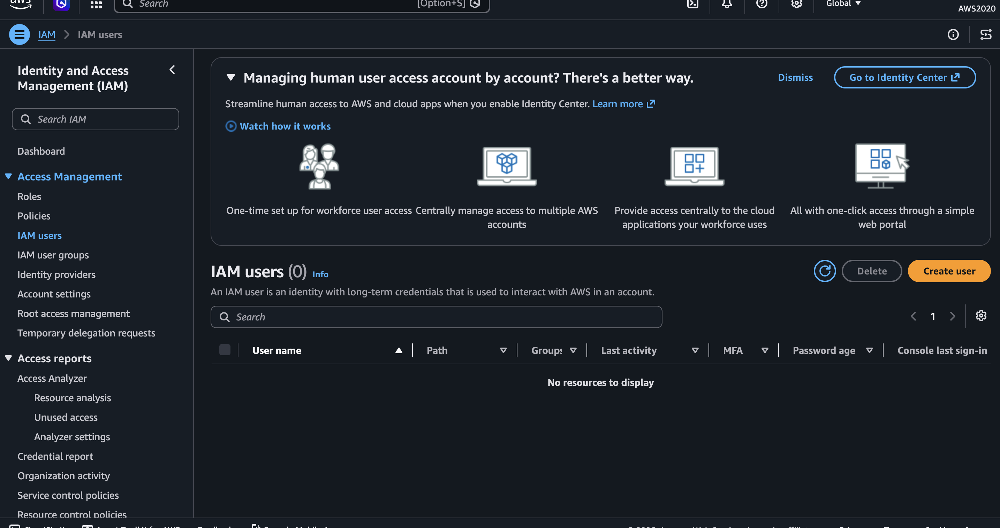
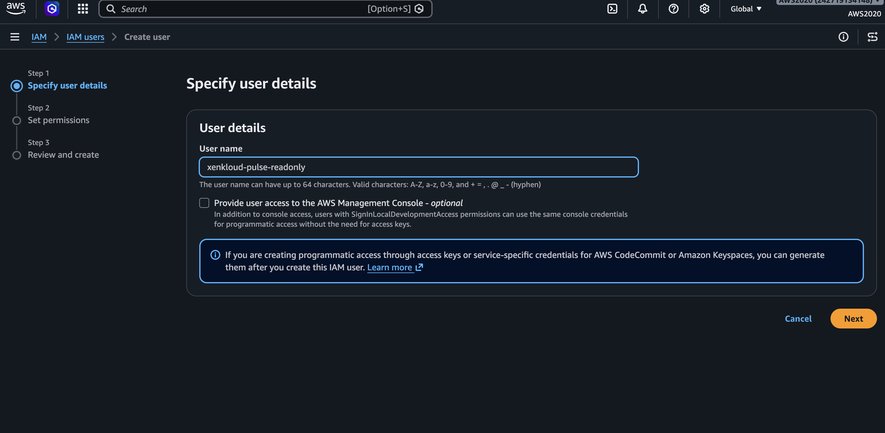
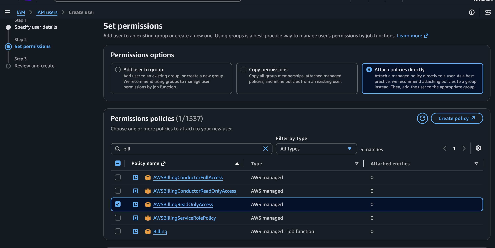
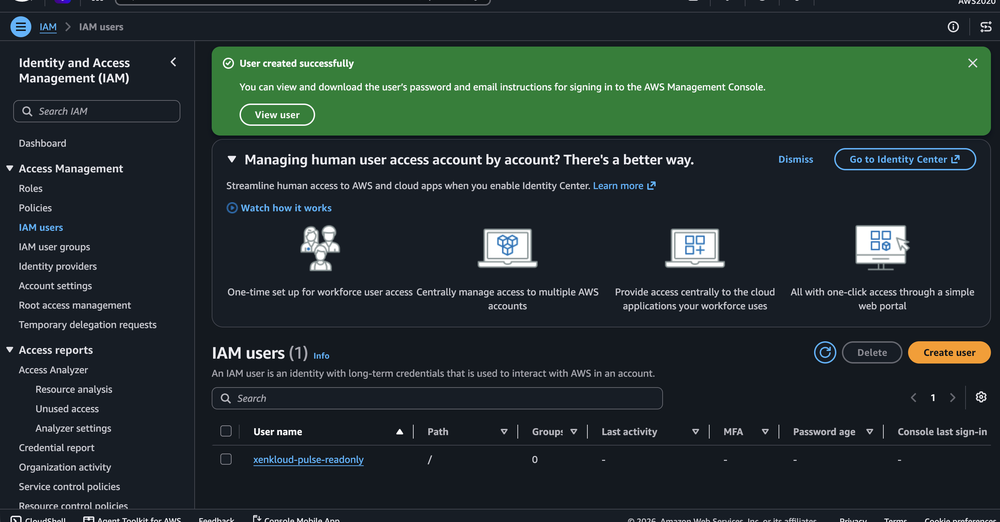
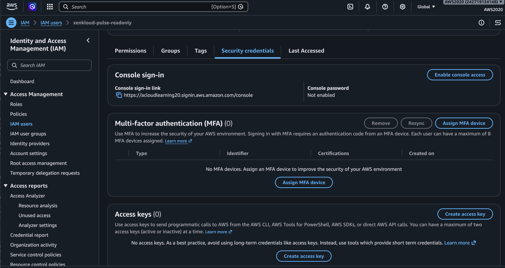
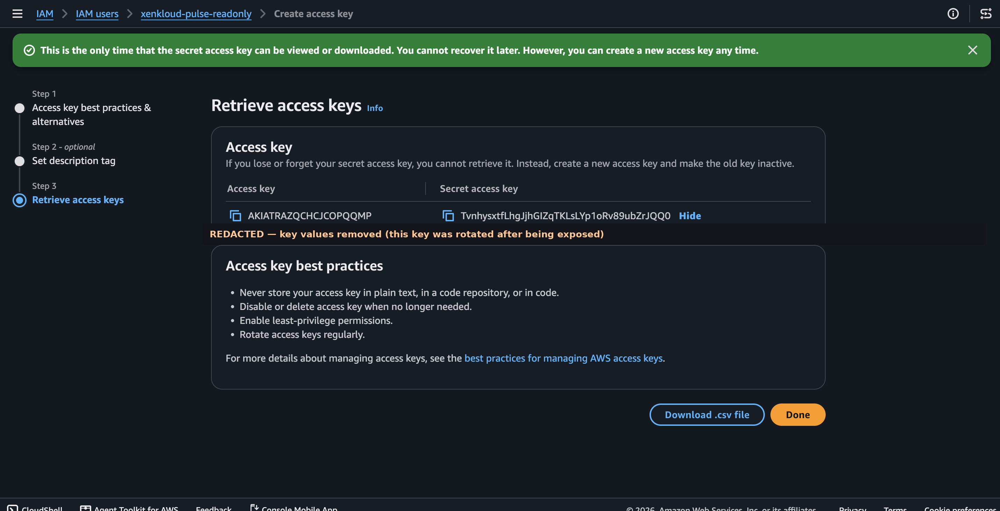

Go to IAM → Users
Search "IAM" in the AWS Console top search bar, then click IAM users in the left sidebar. Click Create user.

Name the user
Give it a clear name so it's obvious what this access is for. Leave "Provide user access to the AWS Management Console" unchecked — this user only needs programmatic access.

Attach read-only permissions
Choose "Attach policies directly." Search and check all three of these policies before clicking Next — it's easy to only add one and miss the others:
AmazonEC2ReadOnlyAccess
CloudWatchReadOnlyAccess

AWSBillingReadOnlyAccess is shown checked here. Before clicking Next, make sure AmazonEC2ReadOnlyAccess and CloudWatchReadOnlyAccess are checked too — otherwise Pulse won't be able to see EC2/EBS resources or detect idle volumes. If you already created the user with only one policy attached, you can add the other two afterward from the user's Permissions tab → Add permissions.
Confirm the user was created
Review the summary and click Create user. You'll see a green confirmation banner.

Generate an access key
Click into the new user → Security credentials tab → scroll to Access keys → click Create access key.

Copy both values immediately
Choose "Third-party service" as the use case, skip the optional description, then copy the Access key ID and Secret access key right away — AWS only shows the secret once.
